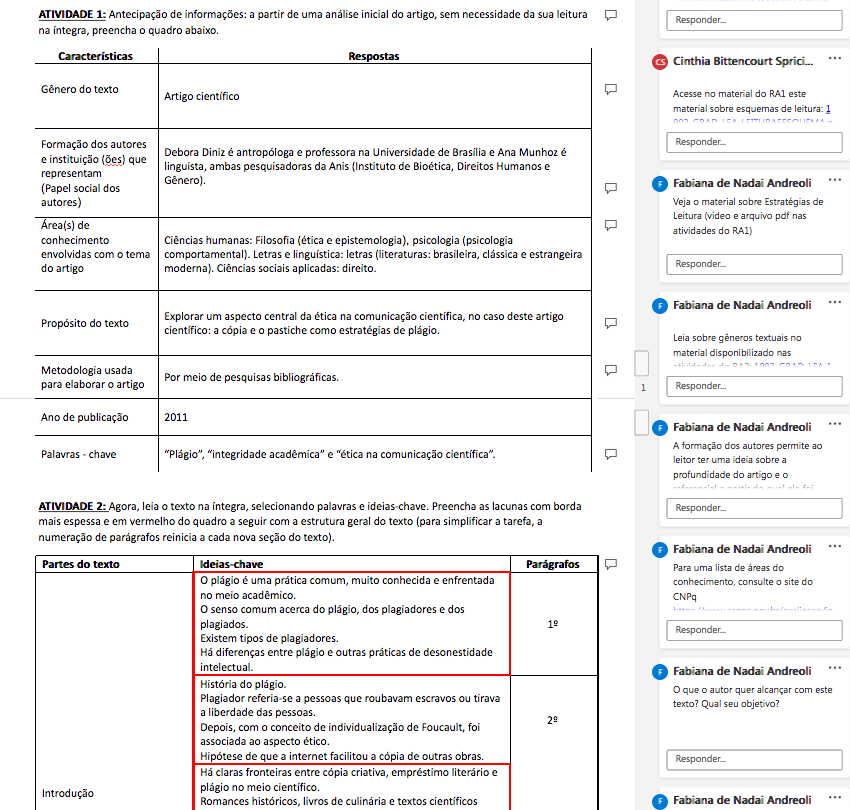
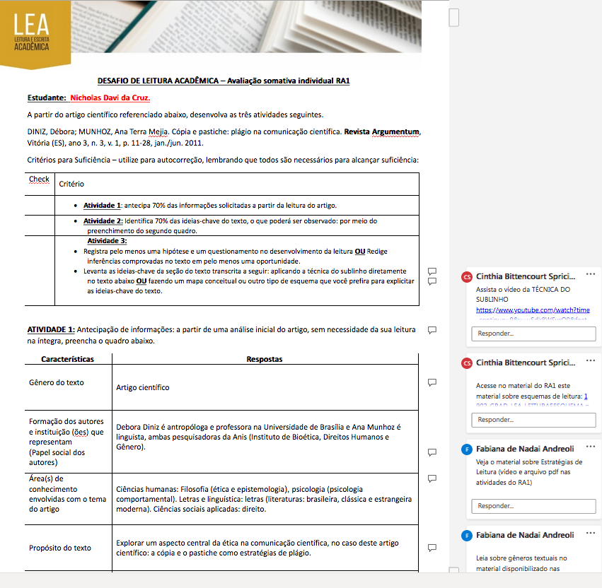
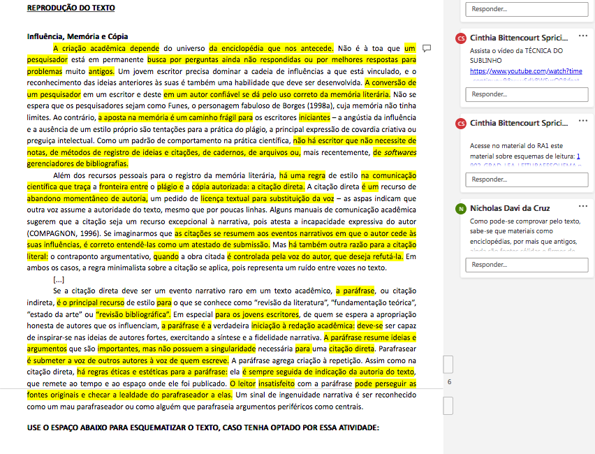
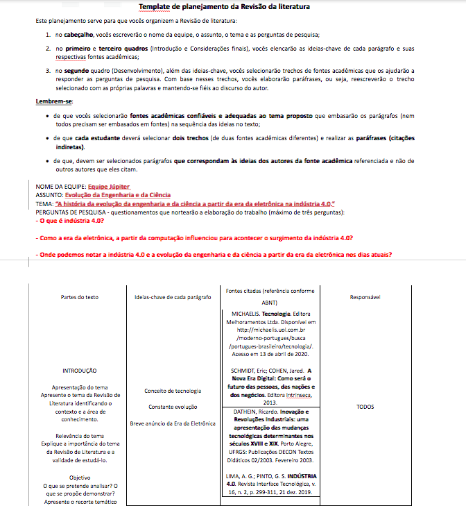
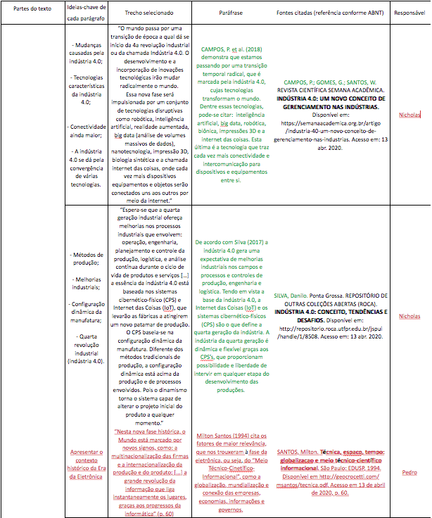
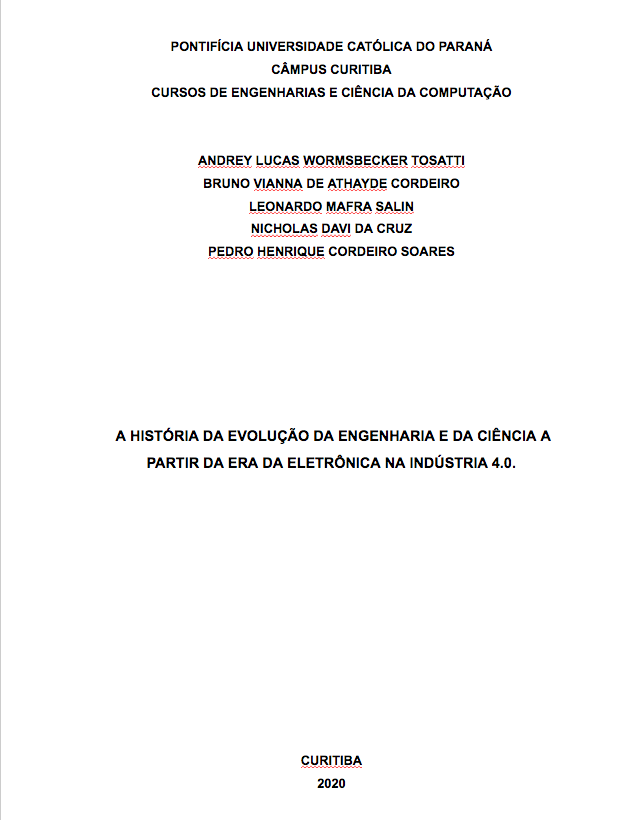
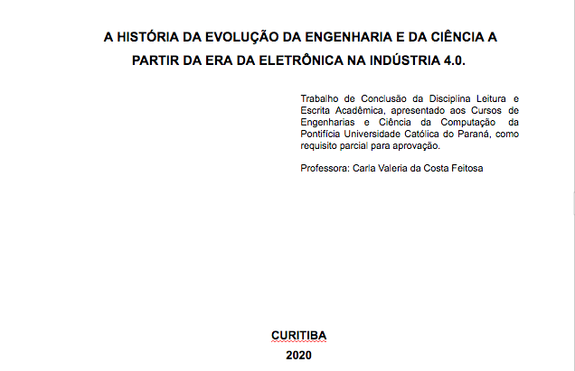
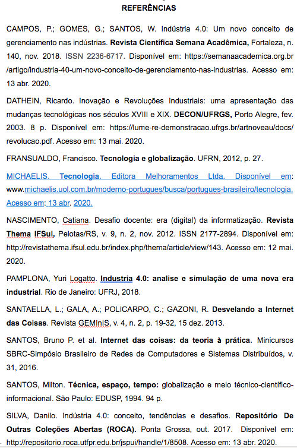

Voltar para o menu Principal
Leitura e Escrita Acadêmica
-
Resultado de Aprendizado 1
Durante toda esta disciplina, nós trabalhamos em grupos de pessoas
aleatórias, a fim de nos conhecermos, inturmarmos e fazermos novas conexões.
No primeiro trabalho, nós desenvolvemos um desafio de leitura acadêmica, no qual
deveríamos ler um artigo científico e responder às questões propostas individualmente.
-

-

-

-
Resultado de Aprendizado 2
No segundo trabalho, nós desenvolvemos uma revisão de literatura, na qual
deveríamos propor um tema para um artigo científico e pesquisar em fontes oficiais
para usar paráfrase e citações diretas. Realizamos este trabalho em grupo.
-

-

-
Resultado de Aprendizado 3
No terceiro trabalho, nós desenvolvemos um baseado nas ideias, paráfrases e referências
que usamos e coletamos no RA2, fizemos o trabalho em grupo também.
-

-

-

Voltar para o menu Principal